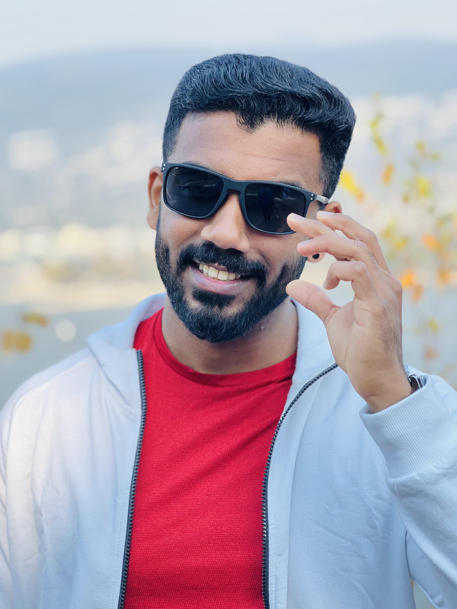

JISHNU JAYARAMACHANDRAN
Technical Recruiter

Professional Summary
Product focused technical recruiter with a proven track record in identifying, attracting, and onboarding
top-tier talent. Expertise in full-cycle recruitment, strategic sourcing, and fostering strong candidate
relationships. Exceptional communication and negotiation skills, coupled with a deep understanding of
industry trends and talent acquisition best practices.
Professional Work Experience
Technical Talent Specialist - theScore Media and Gaming .inc - Toronto
April 2022 - July 2024
-
Performed full cycle recruitment for North American and Gibraltar offices - end to end
process including developing JD’s, supporting stakeholders, coordinating interviews,
making offers, & negotiations while maintaining a 5-star candidate experience.
-
Conducted sourcing and creative outreach methods to engage with talent for technical
roles including Product, Design, and Engineering roles.
-
Provided market intelligence to and Hiring Managers on industry trends, compensation
data, geographic data, and demographic data to expand our sourcing prospects in different
regions across Canada to create a more diverse talent pipeline.
- L
ead and organize team training for DEI focused sourcing strategies on platforms such as:
LinkedIn, LI Recruiter, Greenhouse, Canada Job bank, Handshake, and DEI focused slack
channels.
-
Consistently managed and prioritized 7-10 searches and hiring managers simultaneously
-
Contributed to the Score’s growth from 600 to 1200+ employees in over 2 years, hiring
total 60 (24 actively sourced) employees including backfills and net new roles.
Talent Acquisition Specialist - Teleperformance - Toronto
May 2021 - March 2022
-
Providing HR support including but not limited to issuing offer letters, employment letters,
corporate policies, and procedures documents, collecting KYC documentation, and initiating
background check.
-
Managed high volume recruitment, coordinating orientation and training, preparing
orientation rosters, and taking attendance for new hire classes.
-
Interviewing and pre-screening 10+ candidates daily for different requisitions and
coordinating final interview with hiring managers.
-
Scheduling assessments for different job roles and giving feedback to candidates
-
Reporting to the manager during daily huddles about the recent updates on the no of hires,
candidates in pipeline and internal referrals.
-
Collecting and updating confidential information of candidates in the CCMS to roll out the
payroll.
Senior HR Coordinator - TTK Services, Karnataka, India
Jan 2017-Feb 2019
-
Lead the end-to-end recruitment process, including sourcing, scheduling, and conducting interviews,
candidate management, assessments, and offer negotiations.
-
Maintain positive relationships with hired candidates, through check ins, stay interviews, and various
communication channels.
-
Work directly with leaders and hiring managers to understand business and team needs, talent
nuances, and to advise and guide on interview best practices etc.
-
Plan procedures for improving the candidate experience and ensure that all candidate experiences
are positive and consistent with our organizational values and brand.
Education
- Human Resources Management Post Graduate Certificate, George Brown College May 2021
- International Business Management Post Graduate Certificate, George Brown College Dec 2019
- MBA, Human Resources and Marketing, Bangalore University, Karnataka, India Jun 2017
- Bachelor in Hotel Management, Indira Gandhi Open University, Delhi, India Dec 2015
Certificates
- Certificate in AI for Modern Sourcing and Recruiting (CASR), ADP Jul 2024
- AIRS Certified Technical Recruiter, ADP Nov 2023
- Talent Sourcing Specialist Certification, Social Talent Nov 2022
Contact Details